Free to forkNo licence and no copyright claim: build this game under your own name, or lift one idea from it. Why?
Game overview
Thermonuclear Berserker is a fast, loud, deliberately simple top-down arcade shooter. You fly a nuclear bomb that grew arms, legs and thrusters: a biomechanical war machine launched at an enemy-held world. It falls from deep space through the orbital defenses, down through the sky and across the surface, wrecking everything on the way, until it reaches the world's control nexus and the payload goes off.
A blaster, missiles, a bomb and a berserk slow-motion ability: that's the whole arsenal, with no weapon switching, no inventory and no items. What changes is everything around it. Every launch rolls a different loadout, a different quirk and a different way for each weapon to unload, so no two berserkers fight alike.
It started as a list of everything that bugged Reactorcore about a much-loved little game, Space Chunks 2, and grew from there: Rayforce's dive from space down to a planet's core, Omega Boost's one-way trip from sector to sector, Nova Drift's builds and Gundam Wing's lone machine falling on a world.
Target audience
People who want a quick, explosive arcade session where they're the overwhelming force, not the underdog.
They want to blow up a whole armada with their own hands, and they're tired of arcade games that make them chase floating pickups, sit through invulnerable boss phases and get graded on accuracy.
WASD and the mouse, a boost, a bomb and one ability. Easy to pick up, with a lot of room to fly well.
Game's purpose
Power: one machine against a fleet, a sky and a world.
Excitement and movement: drift, boost and dive through meaty explosions.
Variety: every launch is a new build to discover and push to its limit.
It deliberately avoids draining respect for your time: no waiting for enemies, no chasing loot, no grades, and a run that saves between stages.
Core concept
Arcade upgrade shooters usually start you naked, make you scrape your way up, overpower you by the end, and then reset you to naked again. Space Chunks 2 had exactly that arc, and the design names it as the problem.
Here, every launch starts already rolled: a handful of upgrades on, a quirk and a fire mode per weapon. You don't climb out of poverty; you find out what this particular berserker is good at.
And the run ends with a win by design: the payload going off is the finale, not a failure.
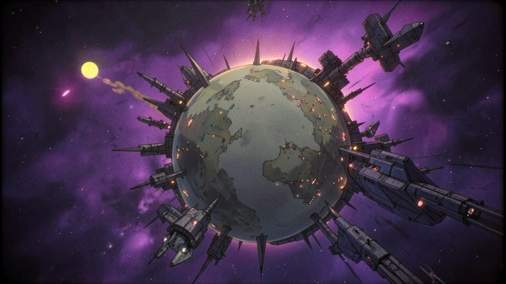
"Launched from beyond visual range like a deep-space probe, it unfurls only once it reaches the world it was sent to take."
Lore and story
The Devourer Dominion
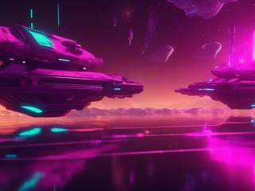
Early in humanity's spread across the galaxy, alongside a few friendly alien peoples, a war empire arrived at the edge of their colonies with a fleet in the sky and started conquering, calmly and without a word. Captured prisoners made the truth plain: the Dominion sees everyone else as raw material. It conquers, consumes and pollutes, endlessly, and it can't be talked to.
Its technology is ordinary and its strategy is brute force: fighters to dreadnoughts, good armor and blasters, missiles, mines, tractor beams and shields, and an endless supply of cannon fodder thrown forward without a second thought. It's incapable of changing, and each of its worlds obeys a single planetary nexus that runs everything on it.
The Berserker
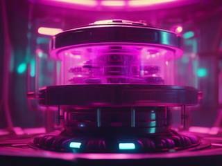
The alliance survived the invasion and broke the advancing armadas. To keep the Dominion from ever coming back, and to stop losing lives fighting it, it built a weapon inspired by an infamous project from humanity's past: a nuclear ramjet that would fly over its targets for as long as its reactor ran.
The Berserker is that idea grown legs. A gaunt, skeletal, nuclear-powered war machine with twin blaster cannons, twin missile launchers, a bomb dropper, a hardened shield and, deep inside, its payload. It evolves as it fights, pulling material from the wreckage to grow new upgrades, and the payload grows with it. It's operated remotely, so nobody rides it in.
The job
Take one Dominion world. Wipe out the guarding fleet and the orbital defenses that would shoot down an ordinary torpedo, then the interceptors in the sky, then every base, factory, depot and defense on the ground, and finally the control nexus itself. Then the payload goes off: a burst of radiation tuned to the Dominion alone, which leaves the world's own wildlife and nature standing for the alliance to reclaim.
Controls and interface
Seen from above, in a wide arena that loops around at its edges. The mouse points the Berserker, which turns toward it at its own turn speed, the way the mechs of Starsector do, and WASD flies it relative to where it's facing.
Fly
Mouse
Point the Berserker
W
Thrust forward
S
Brake, then fly backward
A D
Strafe
Shift
Boost: tap, hold, or overboost
Esc
Pause and menu
Fight
Left button
Blaster
Right button
Missiles, locking on near the cursor
Q
Drop a bomb
F
Berserk: slow motion with six times the damage
Double-tap
Any weapon button unleashes that weapon's rolled fire mode
That's all the keys there will ever be. No upgrade adds a new button or combo; upgrades change what the existing ones do. The HUD shows hull, shield, missile and bomb counts, the berserk meter and a charge bar when a weapon is charging. There's no accuracy rating, no hits-taken grade and no score for how you used your missiles.
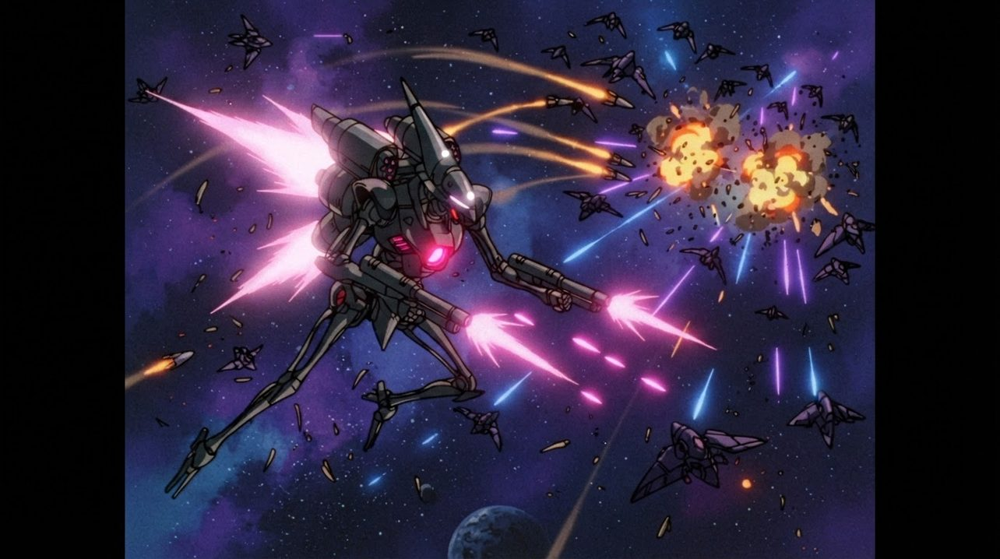
"There's no friction in open space. W thrusts, S brakes, and the Berserker drifts wherever its momentum takes it."
Game layers
The warSol's corner of the galaxy, freed one Dominion world at a time. Never runs out.
A worldOne launch, one Berserker, from deep space to the nexus.
A zoneSpace, orbit, sky or ground, ending with a boss.
A sectorOne looping arena, its defenders already there.
01 · Moment-to-moment
One sector, all guns
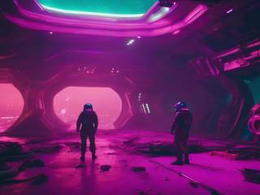
The Berserker descends into a sector where the enemy is already waiting: a looping arena of warships, turrets, debris and clouds. You drift, boost, strafe and unload until nothing is left, then cruise straight on to the next sector. No waiting for waves to warp in.
02 · Low metagame
One world, all the way down
A run is a single strike on a single world: the zones in order from deep space to the ground, several sectors each, a boss at the end of every zone, and the nexus at the very bottom. Before each boss you take an upgrade. Clear the nexus and the payload goes off. It's a one-way ticket, and that's the point.
03 · High metagame
The war log
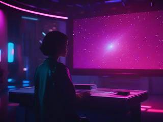
Canonically it's a small war in a small corner of the galaxy, around Sol and its neighbors, and you can keep fighting it forever. Every world you take goes into the log; every world that held out stays on it, red, waiting for another launch.
The log itself is the memento. It starts on a red background and turns gradually blue as worlds fall, fully blue at around a hundred, and then generative patterns start growing over it, changing with every world after that. It also keeps a running total of Dominion units destroyed and the tonnage of enemy metal wrecked.
04 · Practical game flow
Save between zones
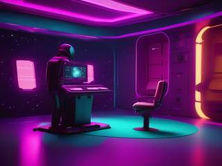
After each boss, the transition to the next zone offers a choice: carry on, or save and quit. A whole world fits in an evening, and a zone in a short break.
Game modes
There's one game: launch a Berserker at a world. Each launch runs on two seeds, one for the Berserker's loadout and upgrades and one for the world and its defenders, so any world that held out can be relaunched from the log with the same seeds, to try again until it falls. Each seed also gives its Berserker its own color; launch the same seed twice and you simply get another unit of the same model.
Features and mechanics
The heart of it
A different weapon every launch
The arsenal is fixed and standard: the blaster, the missiles, the bomb, collisions (armor and shield) and the thruster flame. Every launch starts at the basic level of each, then rolls three to six upgrades already switched on, so you never start naked, and you start differently every time.
On top of that, each weapon rolls its own double-tap mode, separately for the blaster, the missiles and the bomb. Double-tap its button and it does one of three things:
Mode
Best for
What happens
Burst
Hit and run
An instant dump-fire you commit to: triple damage and triple fire rate, then a two-second recovery
Barrage
Focused firepower
Hold it down and the fire ramps up, every shot stronger, while turning and moving slow to a crawl. The blaster builds heat and needs three seconds to vent if it maxes out; missiles and bombs fire in salvos of at least four, each shot after the fourth half again stronger
Charge
Prepared multi-kills
A bar fills up. Fire early for up to 60% more damage; wait for full charge and it's a super shot with six times the damage and more speed, blast, pierce, freeze or corrosion, then a one-second cooldown
Three weapons, three modes each, plus the rolled upgrades and the run's quirk: you'll run out of evenings long before the combinations run out.
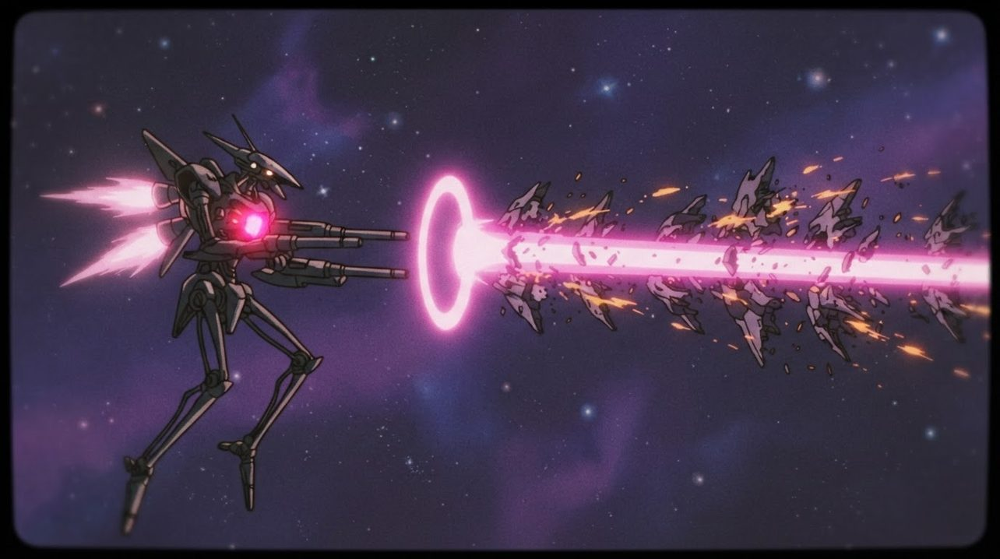
"Let a charged shot fill all the way and it hits for six times the damage, piercing whatever is lined up behind the first target."
This launch's character
A quirk per run
Each launch can also roll a perk, something like a class for just this run. Every one leans toward attack: anything that lowers damage gives something back that still leaves your total firepower higher than before. Waiting and turtling are never the answer.
Example perk
What it does
Glass cannon
Double damage, three quarters of the armor
Bruiser
Heavy armor, heavy guns, slow
Finesse sniper
Fast, precise, long range
Spray and pray
Wider spread and more fire rate at 80% damage
Slammer
Five times the collision damage, and armor hardened against collisions
Planetfall
From deep space to the core
Every world is taken in the same order, the way Rayforce dives from space toward a planet's heart. The backgrounds change with each zone in simple, clean transitions, so you always feel how far down you've come:
Deep spaceThe guarding fleet
OrbitOrbital defenses that would shoot down any ordinary torpedo
The skyInterceptors and air fleets
The groundBases, factories, depots, defenses
The nexusThe world's control center, and the payload
Destroy the nexus and every remaining Dominion unit on the world loses its tyrant and dies with it. The design leaves room for more depth later: seas, underwater zones, caverns and the planet's mantle and core, with walls and tighter spaces, plus gas giants, asteroid belts, nebulae and modest megastructures (shipyards, mining fleets, moon bases, prisons, depots), kept at a grounded, low-tech level.
Growing on the way down
Upgrades before the boss
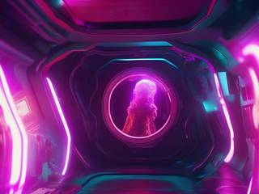
Right before each boss, the Berserker picks up a major upgrade, Metroid-style, so it's there to use in the fight: a new blaster type (freeze, pierce, phase, triple, scatter, ricochet, homing, airburst), a new armor (heat, gravity, reactive, anti-knockback, anti-EMP), a shield effect, a movement trick like a speed charge or a spinning boost attack, or new engine flames.
Then nine options are offered at random and you take three to five, covering movement, berserk, armor, shields, each weapon, allies and utilities: hijacking enemy mines and missiles, shields that repel shots, a visor that shows what the enemy is about to do or reveals cloaked ships.
Upgrades have no prerequisites, so the order they come in can be fully random. And they never change what a weapon is: the blaster stays a blaster, never a beam. Homing is an upgrade called seeker that can go on the blaster, the missiles or the bomb.
Momentum
Real drift, real brakes
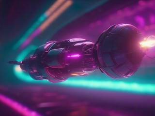
Space Chunks 2 had no momentum, and its movement felt stiff for it. The Berserker drifts: thrust sets you moving, S brakes, and W and S together bring you to a dead stop. Open space has almost no drag; atmosphere, gas and nebulae add more, so each zone flies a little differently.
Missiles lock on to the enemy nearest the cursor and, if it dies before they arrive, pick the next nearest. Boosting is on its own key, from a quick tap to a long overboost, so a fast pass through a fleet is always one finger away.
No cheap tricks
Enemies that fight fair
No invulnerable shields, ever. Nothing turns white and makes you wait for it. Enemy shields are real shields that can be broken.
Turrets are weak points, not gates. You never have to strip a ship's guns before its hull can be hurt; hitting them just brings the hull down faster, and as a ship takes damage its turrets blow off one by one.
No ranks. Enemy classes are standard, each with its own weapon, ability, movement and turret slots, and none of them double their stats as the game goes on. Uncommon and rare elites turn up instead, recognizably special. Swarmers, marauders, minelayers, stealth ships, tractor-beam ships, carriers, shield ships, destroyers, dreadnoughts and motherships, with ground turrets and structures you can shoot from above, and bosses built from parts the way Warning Forever builds them.
The battlefield fights back
Space full of things
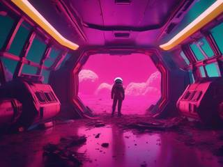
Space isn't just a few flimsy rocks. Sectors hold big station fragments and asteroids to use as cover, debris fields of small fragments that sting a little and add up if you barrel through too fast, dust and nebula clouds that hide things, and methane clouds you can ignite, which regrow five seconds later. Explosions throw hazardous fragments of their own. The sky and the ground get their own equivalents.
Never quite alone
Wingmen in a box
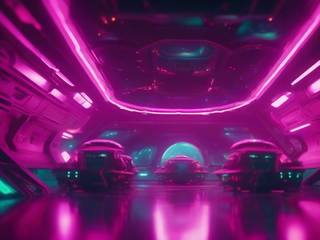
The Berserker builds its own allies inside itself and releases them like eggs or packages that unfold into small ships linked to it. They fight at its side, and if the Berserker falls, they lose power and crash with it.
Allies and enemies alike talk: a line when they arrive, when they score a kill, when they're hurt, when they die, and now and then just from confidence or desperation, depending on how their hull is holding up.
A hard budget
Never a slowdown
Reactorcore crashed an old laptop playing Space Chunks 2, with a stacked ultimate attack and salvos of cluster missiles on screen at once. So the design sets a tight maximum of things that can exist at any moment and keeps the game stable no matter what the player builds.
It also keeps content cheap: every unit, prop, ally, enemy and boss fits inside a square sprite with a circle collider. That makes them easy to draw, even with generated art, easy to add, and every new one works with everything else.
Pickups follow the same spirit. Health, missiles and bombs drop the way they do in Metroid, without fleeing candy to chase after or rocks to break open for points, so your attention stays on the fight.
Target: one Dominion world. Delivery: beyond visual range. On arrival the package unfolds, clears the fleet, the orbit, the sky and the ground, grows stronger on everything it breaks, and finds the nexus. What happens next is the whole reason it was built.
Every launch a different machine. Every world one more step of the log toward blue.